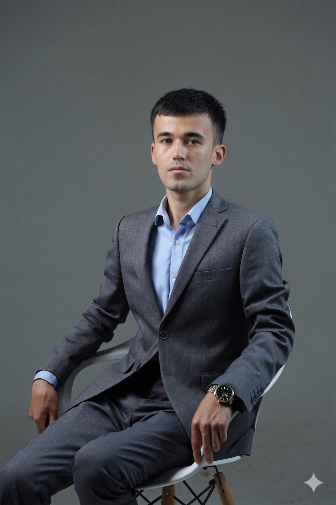

Eldorbek Shavkatov
📊 Ma'lumotlar tahlili | 💼 Investitsion analitik | 📈 Biznes analitik | 🔐 Kiberxavfsizlik
Toshkent Axborot Texnologiyalari Universitetining Axborot xavfsizligi fakultetini tamomlagan. Data/Investment/Business Analytics va Project Management sohalarida kuchli bilim va amaliy ko'nikmalarga ega mutaxassis. 3 yildan ortiq ish tajribasi davomida moliyaviy va iqtisodiy tahlil, shartnoma va loyiha boshqaruvi bo'yicha malakalarini oshirgan. Analitik materiallar tayyorlash, hujjatlar bilan ishlash, moliyaviy modellar yaratish va investorlar uchun taqdimotlar tayyorlash bo'yicha yaxshi ko'nikmalarga ega.
💼 Ish tajribasi
- BMT tomonidan moliyalashtirilgan investitsion loyihalarning moliyaviy va iqtisodiy tahlilini o'tkazish
- Moliyaviy modellar, biznes-keslar va loyihalarni baholash hujjatlarini ishlab chiqish
- Investitsion loyihalarning ijrosini monitoring qilish va baholash, byudjet va muddatlarni nazorat qilish
- Rahbariyat va xalqaro hamkorlar uchun analitik hisobotlar va taqdimotlar tayyorlash
- Yirik kompaniyalar va tashkilotlar uchun kiberxavfsizlik himoyasini ta'minlash va xavfsizlik choralarini joriy etish
- Zaifliklarni aniqlash va bartaraf etish uchun tarmoq infratuzilmasini konfiguratsiya qilish, monitoring va tahlil qilish
- Kiberxavfsizlik hodisalari va tahdidlarini aniqlash, tahlil qilish va ularga javob berish
- Kiberxavfsizlik holati bo'yicha analitik hisobotlar tayyorlash va ularni rahbariyatga taqdim etish
- Kompaniyaning ichki ma'lumotlar bazalari bilan ishlash, moliyaviy va sug'urta ma'lumotlarini to'plash va tartibga solish
- Sug'urta shartnomalari va boshqa moliyaviy hujjatlarni tahlil qilish va qayta ishlash
- Moliyaviy ma'lumotlarni to'plash va chuqur tahlil qilish, rahbariyat uchun muntazam hisobotlar tayyorlash
- Kompaniyaning ichki aktivlari va faoliyatini monitoring qilish va tahlil qilish
⚙️ Ko'nikmalar
📜 Sertifikatlar
Ushbu sertifikat Data Analytics Navigator dasturini muvaffaqiyatli tamomlaganligini tasdiqlaydi. Dastur ma'lumotlar tahlili asoslari, biznes intelligensiya vositalari va real biznes muammolari uchun amaliy analitik ko'nikmalarni o'z ichiga oladi.
Sertifikatni yuklab olishUshbu sertifikat ma'lumotlar to'plash, tozalash, tahlil qilish va vizualizatsiya qilish kabi asosiy ma'lumotlar tahlili tushunchalarini qamrab oladi. Sanoat standartidagi vositalar va texnikalar bilan ishlash bo'yicha bilimlarni tasdiqlaydi.
Sertifikatni yuklab olishNeyron tarmoqlar va ularning kelajagi mavzusi Janubiy Koreyalik IT mutaxassislari ishtirokidagi forumda muhokama qilindi.
GovTech, EdTech, IT & BPO Outsourcing va Venture kabi mavzularda 20 dan ortiq xalqaro ekspertlar ishtirokida sessiyalar tashkil etildi.
📬 Bog'lanish
eldorbekshavkatoff@gmail.com
(+998) 333331228
@eldorbek_shavkatov
eldorbek-shavkatov
eldorbek_shavkatov
eldorbek_shavkatov
https://eldorbek-shavkatov.github.io/portfolio/
Oromgoh ko'chasi 26-uy, 140600 Samarqand, O'zbekiston